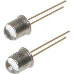

1.6.4. Фотодиоды
Фотодиод – полупроводниковый диод, обладающий свойством односторонней фотопроводимости при воздействии на него оптического излучения.
Обозначение фоторезистора на электрических схемах →
Устройство фотодиода
Фотодиод представляет собой полупроводниковый кристалл обычно с электронно-дырочным переходом (р–n-переходом), снабженный двумя металлическими выводами, один от р- (анод), другой от n-области (катод), и вмонтированный в металлический или пластмассовый защитный корпус (рис.6.4). Материалами, из которых выполняют фотодиоды, служат Ge, Si, GaAs, HgCdTe и др.
Рис. 6.4. Структура фотодиода.
,
Принцип работы
При воздействии квантов излучения в базе происходит генерация свободных носителей, которые устремляются к границе p-n-перехода. Ширина базы (n-область) делается такой, чтобы дырки не успевали рекомбинировать до перехода в p-область. Ток фотодиода определяется током неосновных носителей — дрейфовым током. Быстродействие фотодиода определяется скоростью разделения носителей полем p-n-перехода и ёмкостью p-n-перехода Cp-n.
Фотодиод может работать в двух режимах:
- фотогальваническом — без внешнего напряжения,
- фотодиодном — с внешним обратным напряжением.
Особенности:
- простота технологии изготовления и структуры,
- сочетание высокой фоточувствительности и быстродействия,
- малое сопротивление базы,
- малая инерционность.
Основные параметры фотодиода:
- порог чувствительности (величина минимального сигнала, регистрируемого фотодиодом, отнесённая к единице полосы рабочих частот), достигает 1014 вт/гц;
- уровень шумов – не свыше 10-9 а;
- область спектральной чувствительности лежит в пределах 0,3–15 мкм;
- спектральная чувствительность (отношение фототока к потоку падающего монохроматического излучения с известной длиной волны) составляет 0,5–1 а/вт;
- инерционность (время установления фототока) порядка 10-7– 10-8 сек.
Фотодиоды находят применение в устройствах автоматики, лазерной техники, вычислительной техники, измерительной техники и т.п.